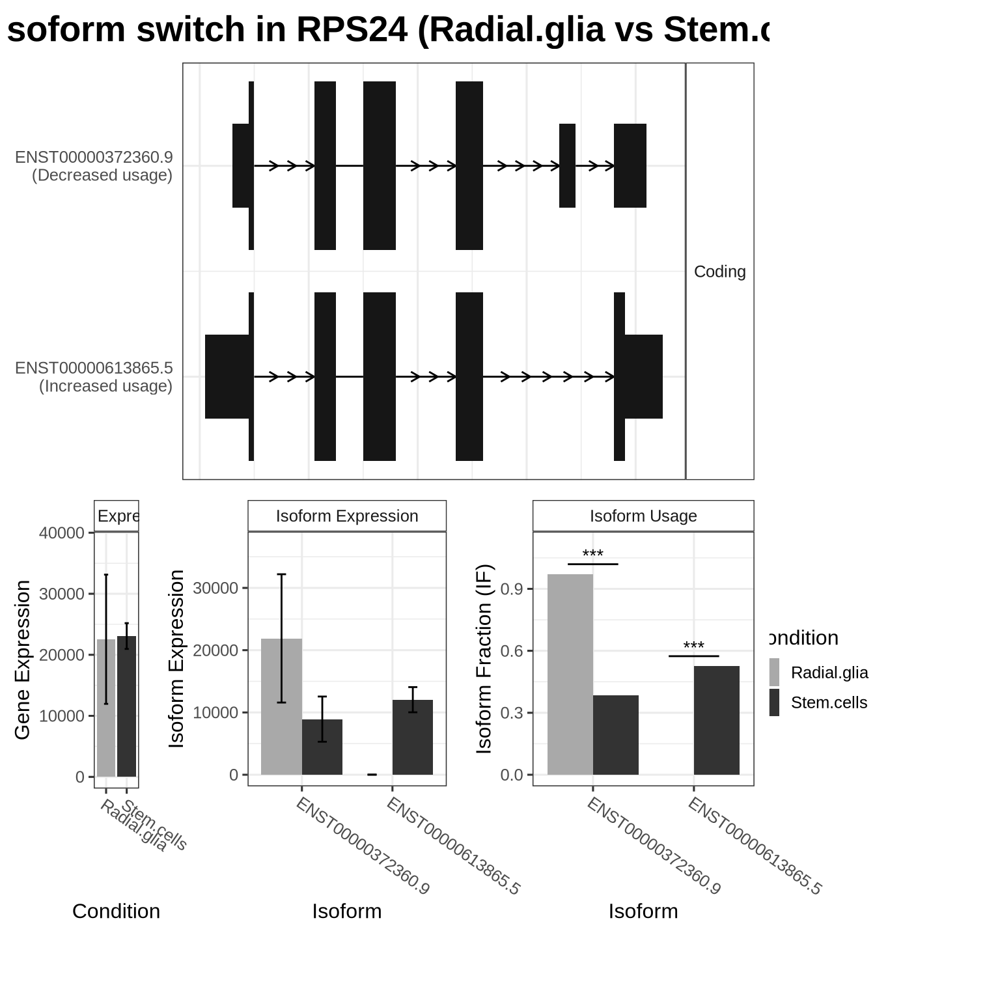
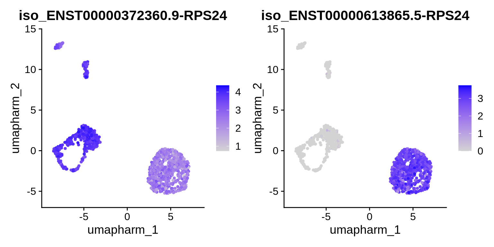

Chapter 12 Differential Transcript Usage (DTU)
Differential transcript usage (DTU), or isoform switching, refers to changes in the relative expression of different transcript isoforms from the same gene across conditions, cell types, or time points. Unlike traditional gene- or isoform-level differential expression, which focuses on changes in total expression, DTU specifically examines how the proportions of isoforms shift between groups. This provides insight into how alternative splicing and isoform regulation contribute to cellular processes and phenotypic differences.
DTU analysis is particularly useful for dissecting complex regulatory mechanisms, such as those underlying neuronal differentiation, disease progression, or cell state transitions, where changes in isoform usage may occur even when total gene expression remains stable. By identifying isoforms that are preferentially expressed under specific conditions, we can begin to link splicing programs to functional outcomes.
This area is still relatively new in the context of single-cell sequencing, and tools developed specifically for single-cell DTU are not yet well established. In this chapter, we therefore use a bulk-oriented tool, IsoformSwitchAnalyzeR, and adapt it to our long-read single-cell setting. The full vignette for IsoformSwitchAnalyzeR can be found here: https://www.bioconductor.org/packages/release/bioc/vignettes/IsoformSwitchAnalyzeR/inst/doc/IsoformSwitchAnalyzeR.html
We will start by loading the required packages.
Code
library(DRIMSeq)
library(DEXSeq)
library(stageR)
library(IsoformSwitchAnalyzeR)
library(rtracklayer)12.1 Preparing the data for DTU analysis
Next, we will build a pseudobulk data set containing isoform expression aggregated across our sample replicates. We will use Seurat’s native AggregateExpression() function and group counts by both cell type and sample replicate. This effectively creates one pseudobulk profile per cell type × sample combination, which is more appropriate for DTU methods like IsoformSwitchAnalyzeR which cannot use individual cells.
In an ideal experimental design, you would have more biological replicates per time point (for example, at least three). In this tutorial we only have two replicates per time point, which is sufficient to illustrate the workflow, but additional replicates would provide more power and robustness for this type of analysis.
Code
#Get pseudobulk counts split by sample and celll type
pseudo.seurat.isoforms <- AggregateExpression(
obj,
assays = "iso",
return.seurat = FALSE,
group.by = c("orig.ident", "cell_type")
)
# Make a dataframe from above data
pseudo.seurat.isoforms.df <- as.data.frame(pseudo.seurat.isoforms)
colnames(pseudo.seurat.isoforms.df)## [1] "iso.C1.STC_Stem.cells" "iso.C2.Day25_Radial.glia" "iso.C2.Day25_Inhibitory.neurons"
## [4] "iso.C2.Day25_Excitatory.neurons" "iso.C4.STC_Stem.cells" "iso.C5.Day25_Radial.glia"
## [7] "iso.C5.Day25_Inhibitory.neurons" "iso.C5.Day25_Excitatory.neurons"Code
# Define sample condtions
sample_data <-as.data.frame(colnames(pseudo.seurat.isoforms.df))
# Rename the column for clarity
colnames(sample_data) <- "colnames"
# Split the column names into sampleID and celltype
split_sample_data <- strsplit(sample_data$colnames, "_")Now that we have our pseudobulk sample data, we need to build a sample table that describes the experimental design and conditions. We’ll call this table samps. We will construct this data frame using the column names of the pseudobulk matrix: for each cell type (four in total), there should be two replicates, which will be reflected as separate rows in samps.
Code
# Create a new data frame with the original column names and extracted sampleID and celltype
samps <- data.frame(
sampleID = sample_data$colnames,
condition = sapply(split_sample_data, `[`, 2)
)
samps$condition <- as.factor(samps$condition)
samps## sampleID condition
## 1 iso.C1.STC_Stem.cells Stem.cells
## 2 iso.C2.Day25_Radial.glia Radial.glia
## 3 iso.C2.Day25_Inhibitory.neurons Inhibitory.neurons
## 4 iso.C2.Day25_Excitatory.neurons Excitatory.neurons
## 5 iso.C4.STC_Stem.cells Stem.cells
## 6 iso.C5.Day25_Radial.glia Radial.glia
## 7 iso.C5.Day25_Inhibitory.neurons Inhibitory.neurons
## 8 iso.C5.Day25_Excitatory.neurons Excitatory.neuronsGreat! Now we can follow the IsoformSwitchAnalyzeR documentation to create a switchAnalyzeRlist and test for DTU across our cell types.
Before generating this object, we first need to subset both the GTF and the count matrix to ensure a 1:1 match between them—that is, the reference GTF and the count data should contain exactly the same set of transcript (isoform) entries. This alignment is essential for IsoformSwitchAnalyzeR to correctly map counts to the underlying transcript models.
Code
## Before generating a switch list we need to subset both the gtf and counts to ensure we have a 1:1 match
#read in gtf This is the GTF output by flames
tx2gene <- import("./data/muti_sample/isoform_annotated.gtf")
# Set row names of pseudo.seurat.isoforms.df to the transcript_id column
# Extract the row names
rownames_split <- strsplit(rownames(pseudo.seurat.isoforms.df), "-")
# Add new columns 'transcript_id' and 'gene_id' to the data frame
rownames(pseudo.seurat.isoforms.df) <- sapply(rownames_split, `[`, 1)
#subset to match
subset_txt2gene <- tx2gene[tx2gene$transcript_id %in% row.names(pseudo.seurat.isoforms.df), ]
subset_cts <- pseudo.seurat.isoforms.df[row.names(pseudo.seurat.isoforms.df) %in% tx2gene$transcript_id, ]
# write gtf as we need it for the bext step
export(subset_txt2gene, "./output_files/multi_sample_subset/DTU.gtf", format = "gtf")12.2 Generating a SwitchList
Now lets create the switch list:
Code
#### genrate a switch list
aSwitchList <- importRdata(
isoformCountMatrix = subset_cts,
isoformRepExpression = subset_cts,
designMatrix = samps,
isoformExonAnnoation = "./output_files/multi_sample_subset/DTU.gtf",
isoformNtFasta = "/data/scratch/users/yairp/Kolf2.1_FLAMESv2/outs/Bambu_NDR_0.75/transcript_assembly.fa", # provide the FLAMES transcript_output .fasta, it will be found in the flames output fodler
showProgress = TRUE,
fixStringTieAnnotationProblem = TRUE
)## Step 1 of 10: Checking data...## Warning in importRdata(isoformCountMatrix = subset_cts, isoformRepExpression = subset_cts, : Using row.names as 'isoform_id' for
## 'isoformCountMatrix'. If not suitable you must add them manually.## Using row.names as 'isoform_id' for 'isoformRepExpression'. If not suitable you must add them manually.## Step 2 of 10: Obtaining annotation...## importing GTF (this may take a while)...## Warning in importRdata(isoformCountMatrix = subset_cts, isoformRepExpression = subset_cts, : We found 2 (0%) unstranded transcripts.
## These were removed as unstranded transcripts cannot be analysed## Warning in importRdata(isoformCountMatrix = subset_cts, isoformRepExpression = subset_cts, : No CDS annotation was found in the GTF files meaning ORFs could not be annotated.
## (But ORFs can still be predicted with the analyzeORF() function)## 5823 ( 4.37%) isoforms were removed since they were not expressed in any samples.## Step 3 of 10: Fixing StringTie gene annoation problems...## There were no need to rescue any annotation## Step 4 of 10: Calculating expression estimates from count data...## Skipped as user supplied expression via the "isoformRepExpression" argument...## Step 5 of 10: Testing for unwanted effects...##
## SVA analysis failed. No unwanted effects were added.## Warning in importRdata(isoformCountMatrix = subset_cts, isoformRepExpression = subset_cts, :
## There were estimated unwanted effects in your dataset but the automatic sva run failed.
## We highly reccomend you run sva yourself, add the nessesary surrogate variables
## as extra columns in the "designMatrix" and re-run this function## Step 6 of 10: Batch correcting expression estimates...## Skipped as no batch effects were found or annoated...## Step 7 of 10: Extracting data from each condition...## | | | 0% | |=============================== | 25% | |============================================================== | 50% | |============================================================================================= | 75% | |============================================================================================================================| 100%## Step 8 of 10: Making comparisons...## | | | 0% | |===================== | 17% | |========================================= | 33% | |============================================================== | 50% | |=================================================================================== | 67% | |======================================================================================================= | 83% | |============================================================================================================================| 100%## Step 9 of 10: Making switchAnalyzeRlist object...## Step 10 of 10: Guestimating differential usage...## The GUESSTIMATED number of genes with differential isoform usage are:## comparison estimated_genes_with_dtu
## 1 Excitatory.neurons vs Inhibitory.neurons 0 - 0
## 2 Excitatory.neurons vs Stem.cells 769 - 1282
## 3 Radial.glia vs Stem.cells 165 - 275## DoneCode
#summary of switch lsit
summary(aSwitchList)## This switchAnalyzeRlist list contains:
## 127534 isoforms from 29885 genes
## 6 comparison from 4 conditions (in total 8 samples)
##
## Feature analyzed:
## [1] "ntSequence"Now that we have our switch list, we apply stringent filtering to remove genes and isoforms that are lowly expressed, as well as isoforms that contribute only a small fraction of a gene’s overall expression. We are deliberately strict here for two reasons:
IsoformSwitchAnalyzeR is designed for bulk data, so using higher stringency thresholds is generally a safer and more biologically meaningful choice in this context.
Filtering out isoforms of little consequence reduces noise, improves the robustness of the DTU testing, and substantially speeds up subsequent analysis steps.
Code
aSwitchList_filt <- preFilter(
aSwitchList,
geneExpressionCutoff = 30, # min avg *gene* expression across samples
isoformExpressionCutoff = 20, # min isoform expression in at least one condition
IFcutoff = 0.05, # keep isoforms that contribute >=5% to gene
removeSingleIsoformGenes = TRUE, # drop genes with only one isoform
acceptedGeneBiotype = NULL, # or e.g. "protein_coding" if annotated
quiet = FALSE
)## The filtering removed 120390 ( 94.4% of ) transcripts. There is now 7144 isoforms leftCode
summary(aSwitchList_filt)## This switchAnalyzeRlist list contains:
## 7144 isoforms from 2865 genes
## 6 comparison from 4 conditions (in total 8 samples)
##
## Feature analyzed:
## [1] "ntSequence"As part of the workflow, we can also add ORF (open reading frame) information to the object. This step can be time-consuming if you have many isoforms, but we recommend running it where possible, as it helps to interpret the potential functional impact of different isoforms in different contexts.
Code
#Add ORF info
aSwitchList_ORF_filt <- analyzeORF(switchAnalyzeRlist = aSwitchList_filt, orfMethod = "longest", showProgress = TRUE)## Step 1 of 3 : Extracting transcript sequences...## Step 2 of 3 : Locating potential ORFs...## | | | 0% | |= | 0% | |= | 1% | |== | 1% | |== | 2% | |=== | 2% | |=== | 3% | |==== | 3% | |==== | 4% | |===== | 4% | |====== | 4% | |====== | 5% | |======= | 5% | |======= | 6% | |======== | 6% | |======== | 7% | |========= | 7% | |========= | 8% | |========== | 8% | |=========== | 8% | |=========== | 9% | |============ | 9% | |============ | 10% | |============= | 10% | |============= | 11% | |============== | 11% | |============== | 12% | |=============== | 12% | |================ | 12% | |================ | 13% | |================= | 13% | |================= | 14% | |================== | 14% | |================== | 15% | |=================== | 15% | |=================== | 16% | |==================== | 16% | |==================== | 17% | |===================== | 17% | |====================== | 17% | |====================== | 18% | |======================= | 18% | |======================= | 19% | |======================== | 19% | |======================== | 20% | |========================= | 20% | |========================= | 21% | |========================== | 21% | |=========================== | 21% | |=========================== | 22% | |============================ | 22% | |============================ | 23% | |============================= | 23% | |============================= | 24% | |============================== | 24% | |============================== | 25% | |=============================== | 25% | |================================ | 25% | |================================ | 26% | |================================= | 26% | |================================= | 27% | |================================== | 27% | |================================== | 28% | |=================================== | 28% | |=================================== | 29% | |==================================== | 29% | |===================================== | 29% | |===================================== | 30% | |====================================== | 30% | |====================================== | 31% | |======================================= | 31% | |======================================= | 32% | |======================================== | 32% | |======================================== | 33% | |========================================= | 33% | |========================================== | 33% | |========================================== | 34% | |=========================================== | 34% | |=========================================== | 35% | |============================================ | 35% | |============================================ | 36% | |============================================= | 36% | |============================================= | 37% | |============================================== | 37% | |============================================== | 38% | |=============================================== | 38% | |================================================ | 38% | |================================================ | 39% | |================================================= | 39% | |================================================= | 40% | |================================================== | 40% | |================================================== | 41% | |=================================================== | 41% | |=================================================== | 42% | |==================================================== | 42% | |===================================================== | 42% | |===================================================== | 43% | |====================================================== | 43% | |====================================================== | 44% | |======================================================= | 44% | |======================================================= | 45% | |======================================================== | 45% | |======================================================== | 46% | |========================================================= | 46% | |========================================================== | 46% | |========================================================== | 47% | |=========================================================== | 47% | |=========================================================== | 48% | |============================================================ | 48% | |============================================================ | 49% | |============================================================= | 49% | |============================================================= | 50% | |============================================================== | 50% | |=============================================================== | 50% | |=============================================================== | 51% | |================================================================ | 51% | |================================================================ | 52% | |================================================================= | 52% | |================================================================= | 53% | |================================================================== | 53% | |================================================================== | 54% | |=================================================================== | 54% | |==================================================================== | 54% | |==================================================================== | 55% | |===================================================================== | 55% | |===================================================================== | 56% | |====================================================================== | 56% | |====================================================================== | 57% | |======================================================================= | 57% | |======================================================================= | 58% | |======================================================================== | 58% | |========================================================================= | 58% | |========================================================================= | 59% | |========================================================================== | 59% | |========================================================================== | 60% | |=========================================================================== | 60% | |=========================================================================== | 61% | |============================================================================ | 61% | |============================================================================ | 62% | |============================================================================= | 62% | |============================================================================== | 62% | |============================================================================== | 63% | |=============================================================================== | 63% | |=============================================================================== | 64% | |================================================================================ | 64% | |================================================================================ | 65% | |================================================================================= | 65% | |================================================================================= | 66% | |================================================================================== | 66% | |================================================================================== | 67% | |=================================================================================== | 67% | |==================================================================================== | 67% | |==================================================================================== | 68% | |===================================================================================== | 68% | |===================================================================================== | 69% | |====================================================================================== | 69% | |====================================================================================== | 70% | |======================================================================================= | 70% | |======================================================================================= | 71% | |======================================================================================== | 71% | |========================================================================================= | 71% | |========================================================================================= | 72% | |========================================================================================== | 72% | |========================================================================================== | 73% | |=========================================================================================== | 73% | |=========================================================================================== | 74% | |============================================================================================ | 74% | |============================================================================================ | 75% | |============================================================================================= | 75% | |============================================================================================== | 75% | |============================================================================================== | 76% | |=============================================================================================== | 76% | |=============================================================================================== | 77% | |================================================================================================ | 77% | |================================================================================================ | 78% | |================================================================================================= | 78% | |================================================================================================= | 79% | |================================================================================================== | 79% | |=================================================================================================== | 79% | |=================================================================================================== | 80% | |==================================================================================================== | 80% | |==================================================================================================== | 81% | |===================================================================================================== | 81% | |===================================================================================================== | 82% | |====================================================================================================== | 82% | |====================================================================================================== | 83% | |======================================================================================================= | 83% | |======================================================================================================== | 83% | |======================================================================================================== | 84% | |========================================================================================================= | 84% | |========================================================================================================= | 85% | |========================================================================================================== | 85% | |========================================================================================================== | 86% | |=========================================================================================================== | 86% | |=========================================================================================================== | 87% | |============================================================================================================ | 87% | |============================================================================================================ | 88% | |============================================================================================================= | 88% | |============================================================================================================== | 88% | |============================================================================================================== | 89% | |=============================================================================================================== | 89% | |=============================================================================================================== | 90% | |================================================================================================================ | 90% | |================================================================================================================ | 91% | |================================================================================================================= | 91% | |================================================================================================================= | 92% | |================================================================================================================== | 92% | |=================================================================================================================== | 92% | |=================================================================================================================== | 93% | |==================================================================================================================== | 93% | |==================================================================================================================== | 94% | |===================================================================================================================== | 94% | |===================================================================================================================== | 95% | |====================================================================================================================== | 95% | |====================================================================================================================== | 96% | |======================================================================================================================= | 96% | |======================================================================================================================== | 96% | |======================================================================================================================== | 97% | |========================================================================================================================= | 97% | |========================================================================================================================= | 98% | |========================================================================================================================== | 98% | |========================================================================================================================== | 99% | |=========================================================================================================================== | 99% | |=========================================================================================================================== | 100% | |============================================================================================================================| 100%## Step 3 of 3 : Scanning for PTCs...## 7117 putative ORFs were identified, analyzed and added.## DoneCode
#saveRDS(
# object = aSwitchList_ORF,
# file = "./output_files/multi_sample_subset/DTU_switch_list_ORF.rds"
#)Lets add in gene symbols to the object so we can easily read what genes are switching
Code
#Add gene symbol to switch lsit
resource_table <- read.csv("./output_files/ref_files/isoform_gene_dict_mutlisample_subset.csv", header = T)
# Access the isoform features list
isoform_features <- aSwitchList_ORF_filt[["isoformFeatures"]]
# Use match to fill in the 'gene_name' based on 'gene_id'
isoform_features[["gene_name"]] <- resource_table$gene_symbol[match(isoform_features[["gene_id"]], resource_table$gene_id)]
# Save the updated isoformFeatures back into the main list
aSwitchList_ORF_filt[["isoformFeatures"]] <- isoform_featuresAfter all of this, we can finally perform the statistical test for DTU. This step can be time-consuming, especially if there are many comparisons to make or a large number of samples to test.
Code
# Execute Switch testing
SwitchListAnalyzed <- isoformSwitchTestDEXSeq(
switchAnalyzeRlist = aSwitchList_ORF_filt,
reduceToSwitchingGenes=FALSE,
reduceFurtherToGenesWithConsequencePotential=FALSE,
alpha = 0.01,
dIFcutoff = 0.25,
onlySigIsoforms=FALSE
)## Step 1 of 2: Testing each pairwise comparisons with DEXSeq (this might be a bit slow)...## Estimated run time is: 9.5 min## | | | 0% | |===================== | 17% | |========================================= | 33% | |============================================================== | 50% | |=================================================================================== | 67% | |======================================================================================================= | 83% | |============================================================================================================================| 100%## Step 2 of 2: Integrating result into switchAnalyzeRlist...## Isoform switch analysis was performed for 9033 gene comparisons (100%).## Total runtime: 1 min## DoneCode
#saveRDS("./output_files/multi_sample_subset/DTU_SwitchListAnalyzed.rds", object = SwitchListAnalyzed)12.3 Visualising DTU Hits
Lets Investigate the results. First we can look at the numebr of DTU hits across each condition.
Code
extractSwitchSummary(SwitchListAnalyzed)## Comparison nrIsoforms nrSwitches nrGenes
## 1 Excitatory.neurons vs Inhibitory.neurons 3 2 2
## 2 Excitatory.neurons vs Radial.glia 181 114 113
## 3 Excitatory.neurons vs Stem.cells 555 321 325
## 4 Inhibitory.neurons vs Radial.glia 88 47 55
## 5 Inhibitory.neurons vs Stem.cells 543 293 337
## 6 Radial.glia vs Stem.cells 503 252 310
## 7 Combined 1159 670 651We can then extract some of the top (most significant) DTU events and visualise them using the built-in plotting functions in the IsoformSwitchAnalyzeR package. These functions make it straightforward to inspect individual genes and their switching isoforms in more detail.
If you run this function bellow you will generate the top 5 DTU events for each condition.
Code
extractTopSwitches(SwitchListAnalyzed, n=20)
# Main results file
iso_feat <- as.data.frame(SwitchListAnalyzed$isoformFeatures)
write.csv(SwitchListAnalyzed$isoformFeatures, "stem_gaba_dtu.csv")
#output switch plots for all
switchPlotTopSwitches(
switchAnalyzeRlist = SwitchListAnalyzed,
n = 5,
splitFunctionalConsequences = F,
filterForConsequences = FALSE, #this could be changed to add in consequeces
fileType = "pdf",
pathToOutput = "./output_files/multi_sample_subset/",
alpha = 0.01
)Let’s explore one example in more detail. Here, we compare stem cells to radial glia and focus on one of the most significant DTU hits, RPS24. We can visualise this using a switch plot.
The switch plot is composed of several panels. At the top, we see the isoform structures for the two RPS24 isoforms tested. Notably, ENST00000613865.5 is missing the penultimate exon, and the two isoforms have different ORFs, yet both are classified as coding. Below, the bar charts summarise overall gene expression and isoform-level expression across conditions. The panel on the right shows the key result: isoform usage (relative proportion) in each condition. In this example, stem cells use a higher proportion of ENST00000613865.5, whereas radial glia preferentially use ENST00000372360.9, illustrating a clear isoform switch between these two cell types.
## Omitting toplogy visualization as it has not been added. You can add this analysis through analyzeDeepTMHMM(). To avoid this message set "plotTopology=FALSE"
This can be visualised and verified using our Seurat plotting functions. Let’s first look at gene-level expression of RPS24. As you can see below, RPS24 is expressed ubiquitously and appears, at first glance, to be a fairly unremarkable gene with expression detected across all cell types.
Code
FeaturePlot(obj, features = "RPS24", reduction = "umap.harm")
Let’s dive in and plot the isoforms from the switch plot to see what is really going on. When we visualise these isoforms, we observe a clear separation in isoform expression between stem cells and radial glia. Stem cells appear to use a mixture of both isoforms, whereas radial glia are much more selective and predominantly express ENST00000372360.9. (It is important to note that additional RPS24 isoforms exist in the data, but they were not included in our DTU test or in the plots shown here.)
Code
FeaturePlot(obj, features = c("ENST00000372360.9-RPS24", "ENST00000613865.5-RPS24"), reduction = "umap.harm") 
12.4 Final thoughts
DTU analysis is a powerful and exciting way to explore how isoforms are used in different contexts. Once you have the switch list we generated here, you can systematically explore many alternative DTU hits, inspect structural differences between isoforms, and assess whether particular transcripts are likely coding or non-coding. Together, these insights can greatly strengthen our understanding of isoform dynamics across cell types and conditions. Combined with trajectory analysis and standard differential expression, DTU provides yet another complementary lens for exploring the isoform landscape at single-cell resolution.